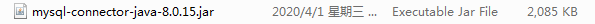
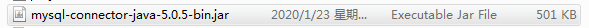

问题总结
今天在连接数据库的时候报了两个错误。之前连都是没有问题的。
Loading class com.mysql.jdbc.Driver. This is deprecated. The new driver class is com.mysql.cj.jdbc.Driver.Error querying database. Cause: java.sql.SQLException: The server time zone value 'Öйú±ê׼ʱ¼ä' is unrecognized or represents more than one time zone. You must configure either the server or JDBC driver (via the serverTimezone configuration property) to use a more specifc time zone value if you want to utilize time zone support.
问题原因
这里连接是我用的jar包是8.0.15版本的。

之前用的是5.0.5版本的。

版本高的jar包约束太多，这也是我连接出现问题的原因。因此，我们也可以换成低版本的jar包来解决问题。
解决方法
第一个错误还是很容易理解的。com.mysql.jdbc.Driver不推荐使用,让我们使用新的驱动com.mysql.cj.jdbc.Driver。
第二个错误是服务器程序和JDBC的时区时间不一致，连接失败。在jdbc连接(url)后面添加时区相关配置即可。&serverTimezone=GMT或者&serverTimezone=UTC或者&serverTimezone=GMT%2B8
注意：xml中的&需要使用&这种形式，解析的时候才不会出错。
xml特殊符号
小于号< 大于号> && 单引号'双引号"
其他
jdbc:mysql://localhost:3306/mybatis?useSSL=true&useUnicode=true&characterEncoding=UTF-8&serverTimezone=UTC"
useSSL=true如果不设置显式选项，则必须建立默认的SSL连接。需要通过设置useSSL=false来显式禁用SSL，或者设置useSSL=true并为服务器证书验证提供信任存储。简单说就是连接Mysql更安全。
useUnicode=true&characterEncoding=UTF-8中文乱码问题。
This is copyright.